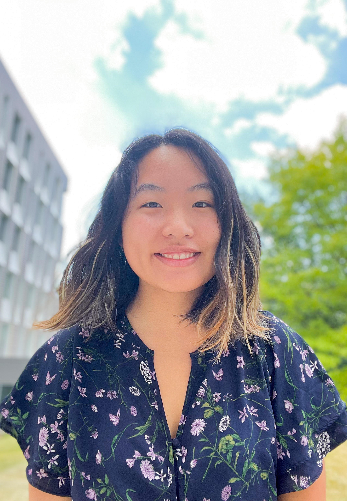

About
Samantha Yap is a 21-year-old artist, user interface designer, and coder currently based out of Arlington, Virginia. She is a recent graduate of Cornell University, where she majored in Information Science and minored in Fine Arts and Game Design. Samantha paints and experiments with sculpture techniques centered around themes of uncertainty, playfulness, and deconstruction. Additionally, she paints portraits, plein air landscapes, and animals. As a user interface designer, Samantha is fascinated with learning how to deconstruct a person’s needs, carefully and artistically tailoring products. She has also applied her background in software engineering and design to help create two video games, both showcased in the GDIAC showcase held at Cornell University. In her free time, Samantha is passionate about reading, long walks, the environment, and queer rights. You can see her blog here.
Art Mediums and Techniques
- Acrylic, oil, gouache, watercolor paint
- Mixed media pens, pastels
- Found wood pieces
- Plaster and wiring
- Stone and plate lithography
| Field | Tools |
|---|---|
| UX Design | Adobe XD, Bootstrap, Mural, Photoshop, Figma, Vector Graphics, Canva |
| Front-End Development | PHP, HTML, CSS, SQL, WordPress |
| Back-End Development | Java, Python, Ocaml, Unreal Engine, Mobile (iOS), C++ |
| Other | Agile/Lean, Excel, PowerPoint, Word, Salesforce, Shopify |